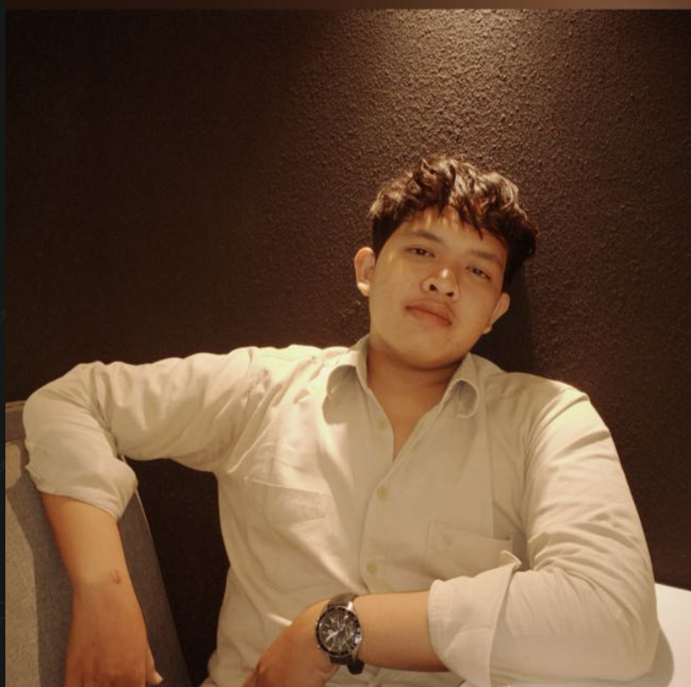

Memimpin manajemen, legalitas, dan strategi bisnis untuk lini usaha National Graphic, Taxidia, dan National Garage.
Mengelola perantara transaksi dan negosiasi properti untuk area Boyolali.
Implementasi sensor thermocouple MAX6675 untuk sistem kontrol suhu berbasis mikrokontroler.
Penggunaan Computer Vision untuk inspeksi dan otomasi industri.
Pembuatan ladder diagram untuk PLC Bosch Rexroth dan Schneider menggunakan ctrlX AUTOMATION.